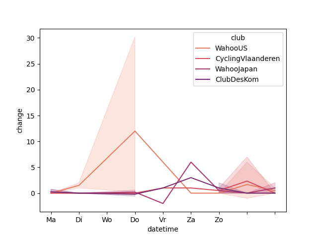
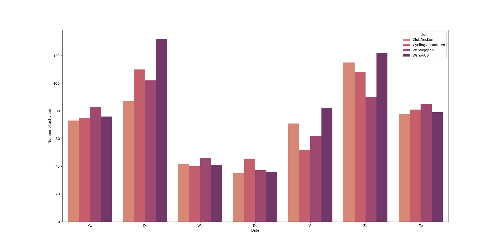
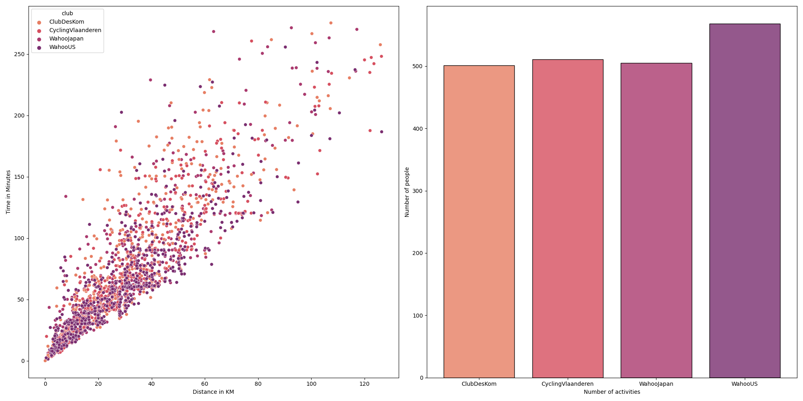
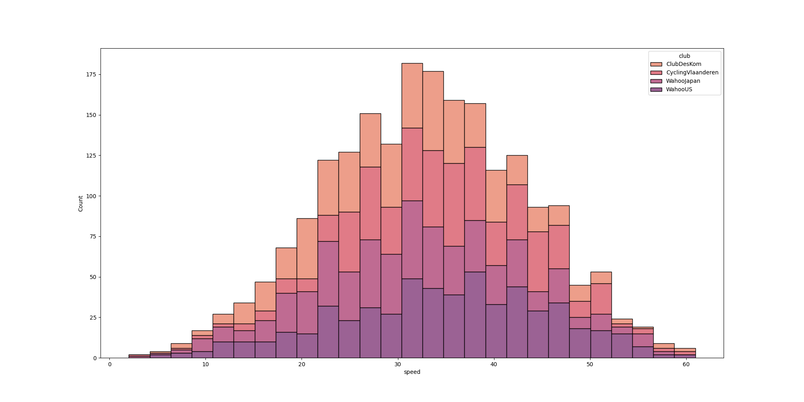
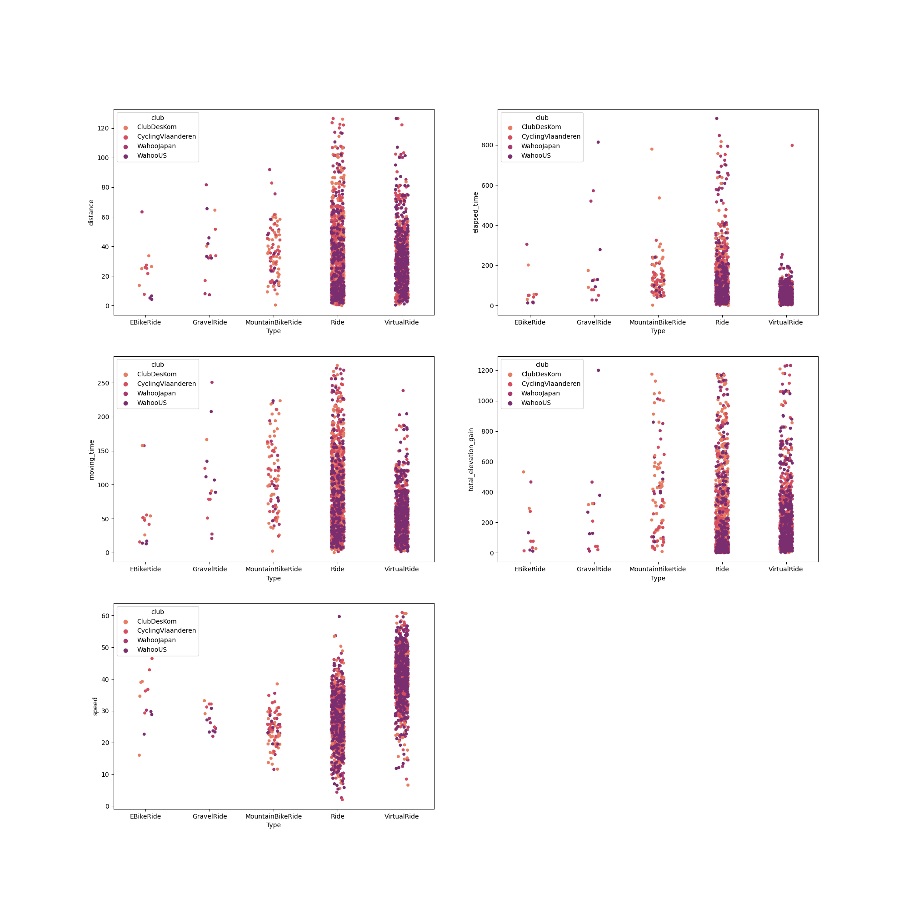

| 2022-12-11 | 1 |
|---|---|
| week change members | 2 |
| week report count per date | 3 |
| week report distance v number | 4 |
| week report speed hist | 5 |
| week report sport types | 6 |
| Table of Contents | t |
|---|---|
| Exposé | ESC |
| Full screen slides | e |
| Presenter View | p |
| Source Files | s |
| Slide Numbers | n |
| Toggle screen blanking | b |
| Show/hide slide context | c |
| Notes | 2 |
| Help | h |